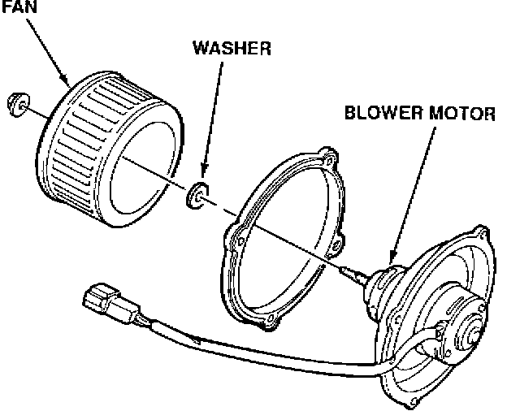
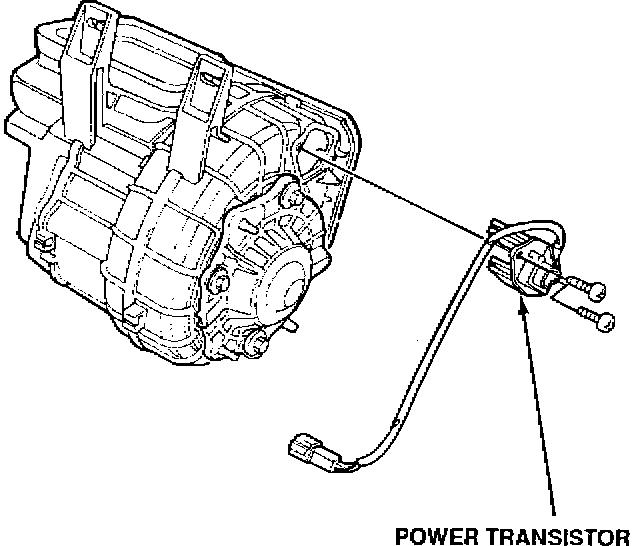

Blower Motor - Only Runs On High
9217acura01
YEAR
1991-92
MODEL
NSX
VIN APPLICATION
See VEHICLES AFFECTED
February 17, 1992
BULLETIN NO.
92-007
Blower Motor Only Runs on High
SYMPTOM
The blower motor runs only on the high speed setting.
PROBABLE CAUSE
Contamination on the blower motor commutator ring creates a higher than normal current draw. This causes the power transistor to fail.
VEHICLES AFFECTED
1991: All 1992: Through VIN JH4NA1 ... NT000697
CORRECTIVE ACTION
Replace the blower motor and power transistor (see PARTS INFORMATION).
1. Remove the blower assembly following the procedure on page 22-62 of the service manual.

2. Remove and replace the blower motor. The new blower motor should have a white dot on the 2-P connector. Be sure to install the washer on the blower motor shaft before installing the fan.

3. Remove and replace the power transistor.
4. Reinstall the blower assembly and the remaining parts removed for the repair.
PARTS INFORMATION
Blower Motor P/N 79310-SL0-A01
Power Transistor P/N 79340-SL0-A01
WARRANTY INFORMATION
In warranty: The normal warranty applies.
Out of warranty: Any repair performed after warranty expiration may be eligible for goodwill consideration by the District Service Manager. You must request consideration, and get the DSM's decision, before starting work.
Operation number: 612125
Flat rate time: 0.8 hour
Failed P/N: P/N 79310-SL0-A01
Defect code: 064
Contention code: B02